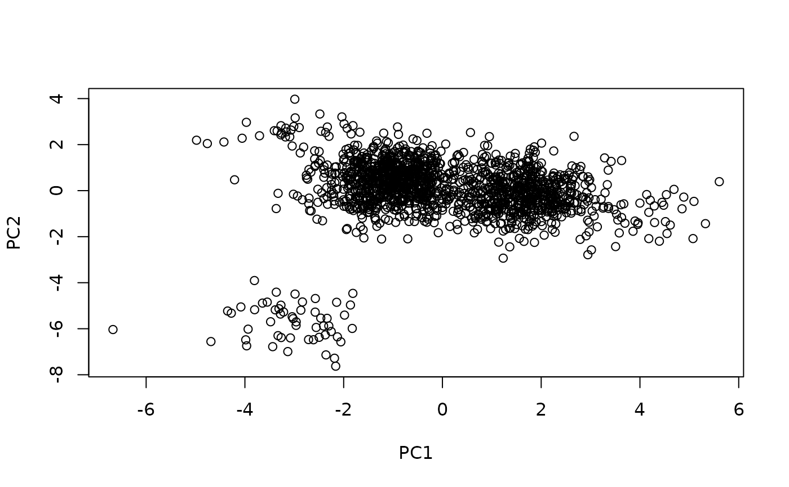
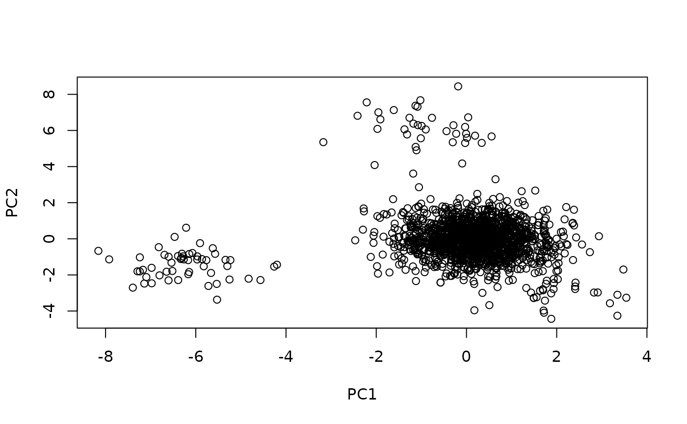

Batch effect correction on two single-cell batches
CorrectBatch(
refBatch,
queBatch,
cnRef = NULL,
cnQue = NULL,
queNumCelltypes = NULL,
maxMem = 5,
pairs = NULL,
kNN = 30,
sampling = FALSE,
numSamples = NULL,
idxQuery = NULL,
idxRef = NULL,
pcaDim = 50,
perCellMNN = 0.08,
fuzzy = TRUE,
fuzzyPCA = 10,
estMethod = "Median",
clusterMethod = "louvain",
pairsFilter = FALSE,
doCosNorm = FALSE,
correctEmbeddings = FALSE,
maxLoop = 1,
loopTol = 0.001,
verbose = FALSE
)Reference batch.
Query batch (batch to correct).
Cosine normalization of the reference batch.
Cosine normalization of the query batch.
Number of cell types in the query batch. By default Canek searches the number of cell types using an heuristic algorithm. Change this parameter if you know the number of cell types in advanced.
Maximum number of memberships from the query batch. This parameter is used on the heuristic algorithm to find the number of cell types.
A numerical matrix containing MNNs pairs cell indexes. First column corresponds to query batch cell indexes.
Number of k-nearest-neighbors used to define the MNNs pairs.
Use MNNs pairs sampling when using a Kalman filter to estimate the correction vector.
If sampling. Number of MNNs pairs samples to use on the estimation process.
Numerical vector indicating the index of the cells from the query batch to use on the correction vector estimation.
Numerical vector indicating the index of the cells from the reference batch to use on the correction vector estimation.
Number of PCA dimensions to use.
Threshold value to decide if a membership's correction value is calculated. As a rough interpretation, this values can be thought as the proportion of cells from a membership with an associated MNN pair. If the proportion is low, an specific correction vectors is not calculated for this membership.
Use fuzzy logic to join the local correction vectors.
Number of PCs to use in the fuzzy process.
Method to use when estimating the correction vectors:
Median. Use the cells median distance.
EKF. Use an extended Kalman filter.
Method used to identify memberships.
Filter MNNs pairs before estimating the correction vectors. If TRUE, the pairs are filtered from outliers using an interquartile range method.
Whether to do cosine normalization.
Whether to perform the correction on PCA embeddings instead of gene expression.
Number of times to repeat the correction, using each pass's corrected query batch as the input to the next. Only used when correctEmbeddings = TRUE; ignored (with a warning) otherwise, since each pass would need to recompute the PCA over gene expression.
Used to stop repeating early. Once a new pass changes the correction, on average per cell, by less than this fraction of the previous pass, looping stops.
Print output.
A list containing the input batches, the corrected query batch, and the correction data
CorrectBatch is a method to correct batch-effect from two single-cell batches. Batch-effects observations are defined using mutual nearest neighbors (MNNs) pairs and cell groups from the query batch are distinguished using clustering. We estimate a correction vector for each cluster using its MNNs pairs and use these vectors to remove the batch effect from the query batch in two ways:
A linear correction is performed by equally correcting the cells from the same cluster.
A non-linear correction is performed by differently correcting each cell using fuzzy logic.
# \donttest{
x <- SimBatches$batches[[1]]
y <- SimBatches$batches[[2]]
z <- CorrectBatch(x, y)
Corrected <- z$`Corrected Query Batch`
Uncorrected_PCA <- prcomp(t(cbind(x,y)))
plot(Uncorrected_PCA$x[,1:2])

Corrected_PCA <- prcomp(t(cbind(x,z$`Corrected Query Batch`)))
plot(Corrected_PCA$x[,1:2])

# }